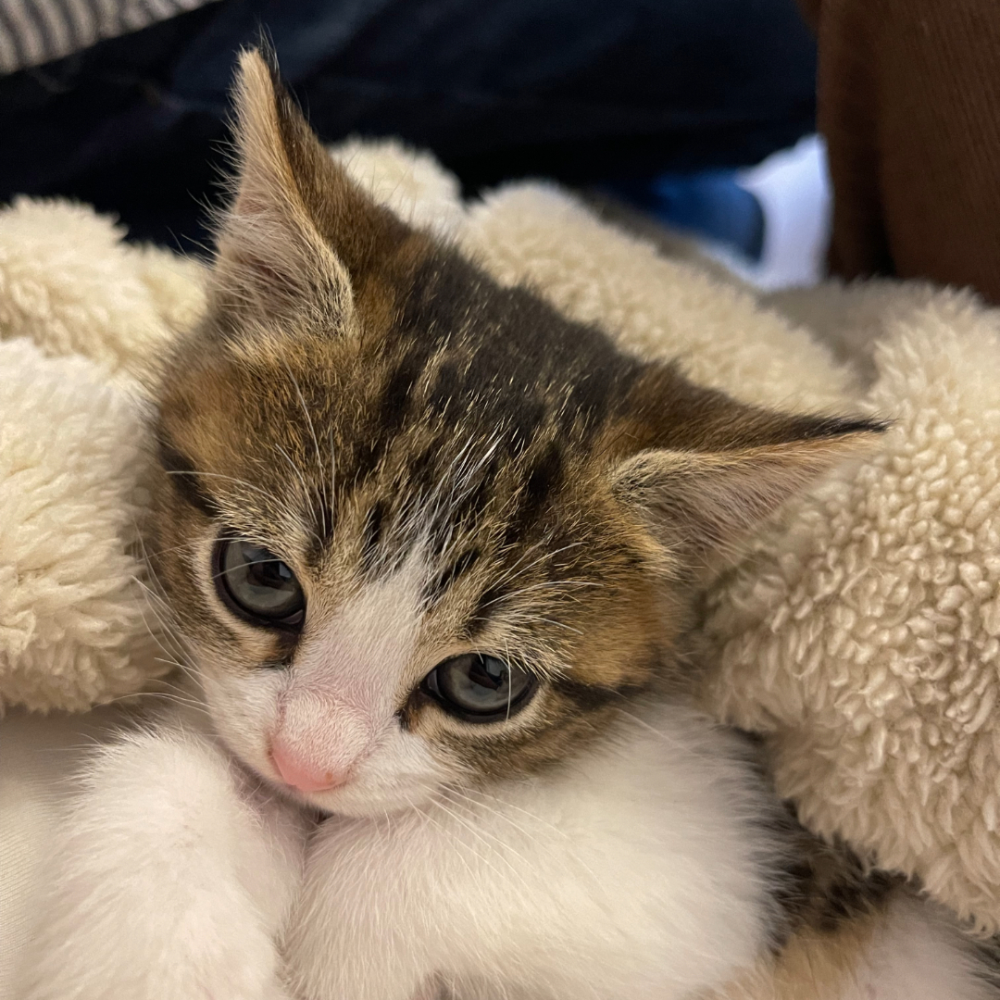

Es un animal mamífero porque nace vivo de la madre. Tiene el cuerpo cubierto de pelo, tiene cuatro patas y rabo. Tiene unas uñas muy afiladas que utiliza para cazar y sujetar ratas y ratones. Utiliza la lengua para limpiarse.

A los gatos les encanta que les toquen alrededor de las zonas en las que se
localizan las glándulas faciales, como la base de las orejas, bajo la barbilla y cerca de las mejillas. Los humanos, por su parte, somos seres inherentemente sociales para los que el acercamiento y
el contacto son muestras de afecto
El Felis catus mantiene una relación con los seres humanos desde hace mucho tiempo.
Probablemente, abundantes roedores atrajeron a los gatos salvajes a las comunidades humanas.
La habilidad de los gatos para matarlos puede haberles ganado la simpatía de los seres humanos.
Los antiguos egipcios habrían sido los primeros en domesticar gatos por primera vez hace 4.000 años.
Posteriormente, las civilizaciones de todo el mundo adoptaron a los gatos como animales de compañía.
Historia de HTML
14/febrero/2024 | Sherlin Pech